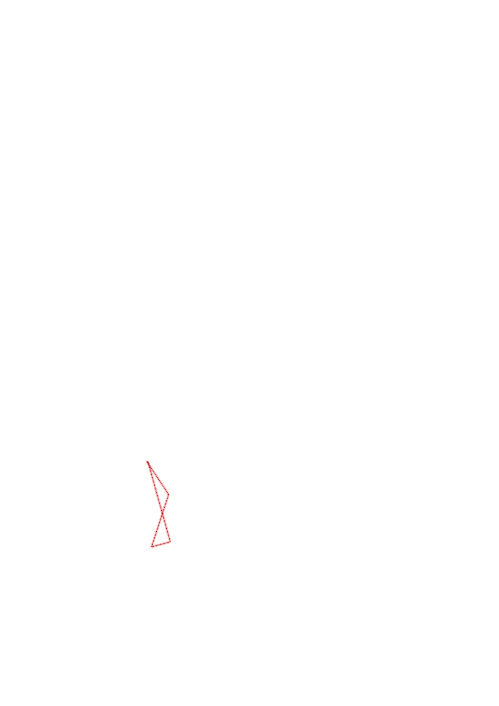
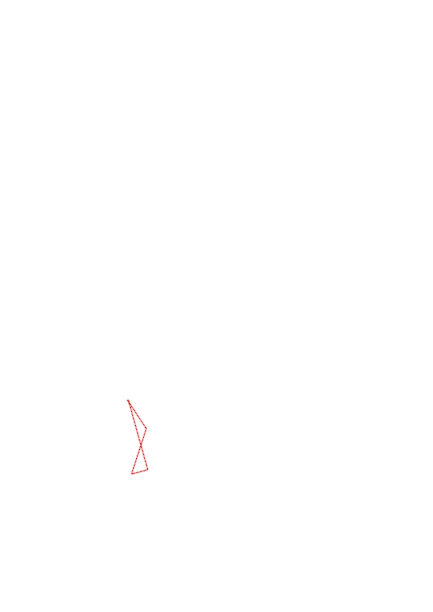
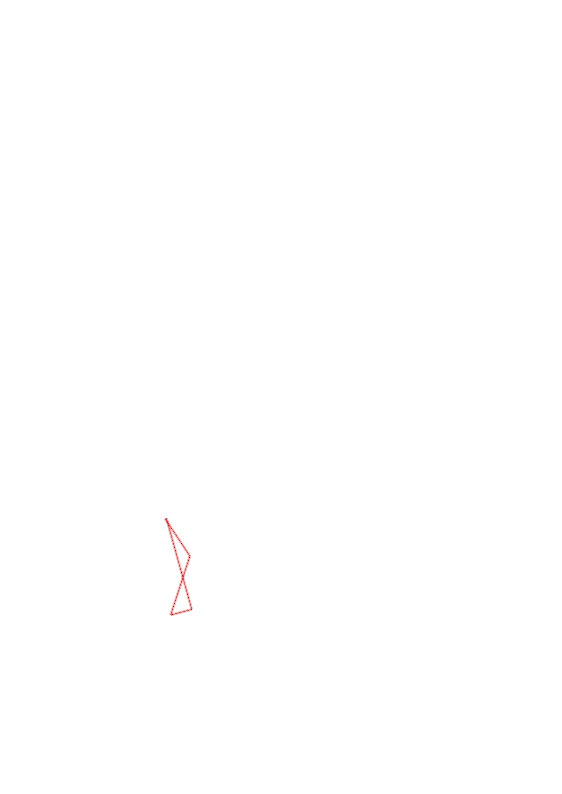

| Control | Points | Time Punched | Distance | Your Time | Pace | Place | Fastest Time | Median Time | % Behind Fastest |
|---|---|---|---|---|---|---|---|---|---|
| 37 | 30 | 0.25 | 0:42:48 | 2:51:12 | 3 / 3 | 0:08:15 | 0:08:26 | 418% | |
| 31 | 30 | 0.35 | 0:10:27 | 29:51 | 5 / 5 | 0:04:32 | 0:07:29 | 130% | |
| 42 | 40 | 0.12 | 0:03:30 | 29:10 | 9 / 9 | 0:00:52 | 0:01:49 | 303% | |
| Finish | 0 | 0.53 | 0:08:07 | 15:18 | 3 / 4 | 0:03:42 | 0:06:11 | 119% |
